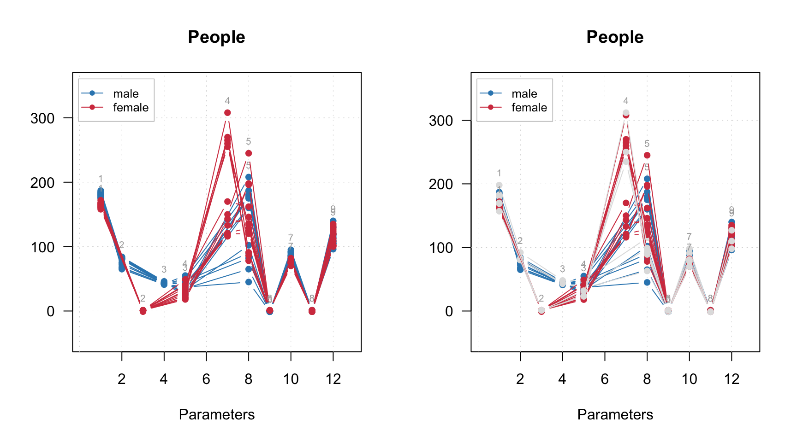
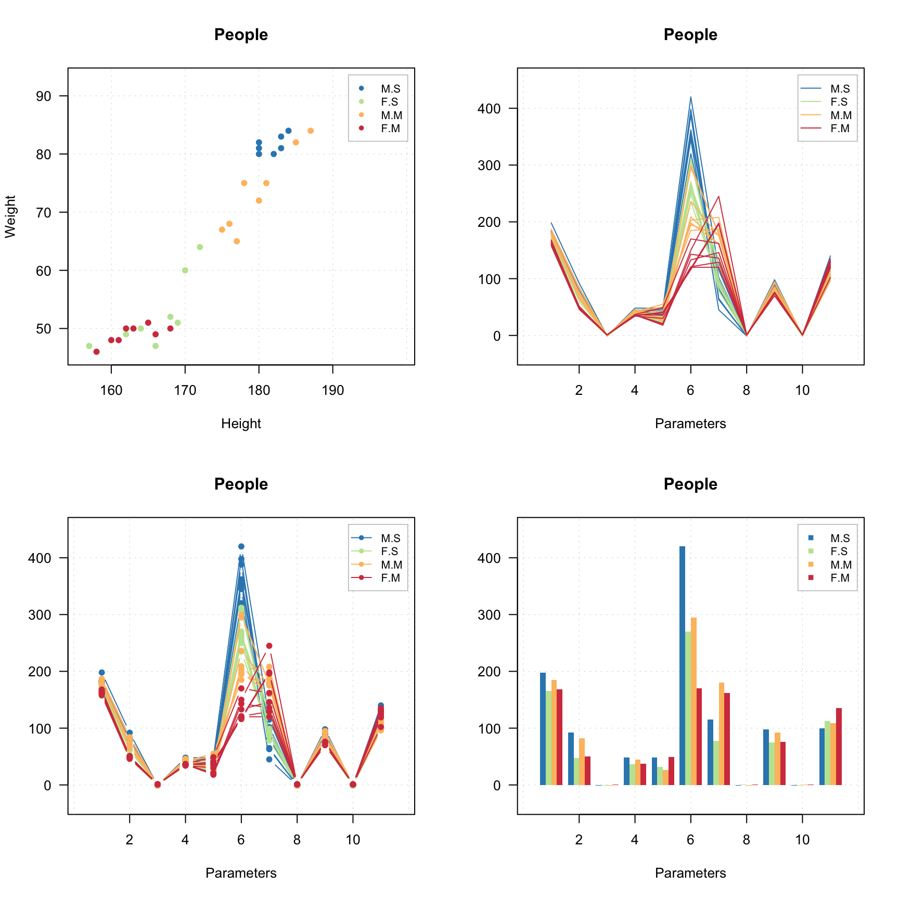
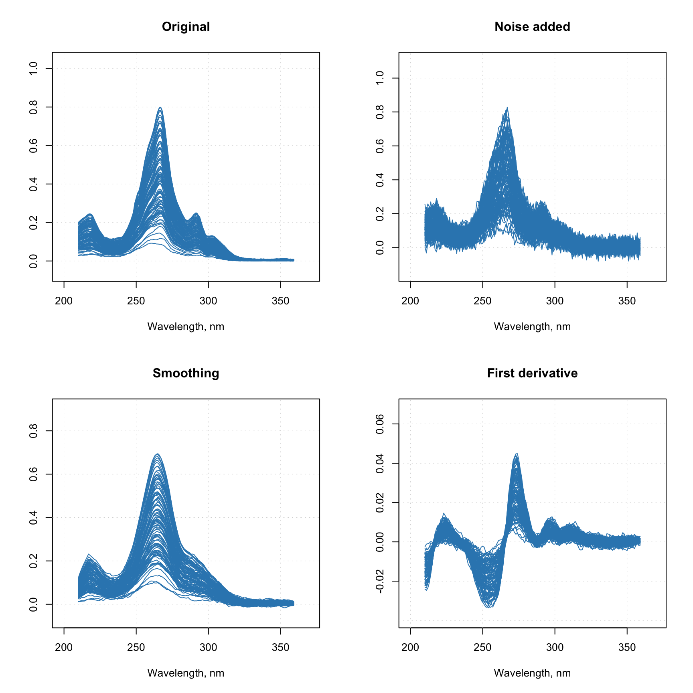

Preprocessing
The package has several preprocessing methods implemented, mostly for different kinds of spectral data. All functions for preprocessing starts from prefix prep. which makes them easier to find by using code completion. In this chapter a brief description of the methods with several examples will be shown.
Autoscaling
Autoscaling consists of two steps. First step is centering (or, more precise, mean centering) when center of a data cloud in variable space is moved to an origin. Mathematically it is done by subtracting mean from the data values separately for every column/variable. Second step is scaling og standardization when data values are divided to standard deviation so the variables have unit variance. This autoscaling procedure (both steps) is known in statistics simply as *standardization’. You can also use arbitrary values to center or/and scale the data, in this case use sequence or vector with these values should be provided as an argument for center or scale.
R has a built-in function for centering and scaling, scale(). The method prep.autoscale() is actually a wrapper for this function, which is mostly needed to set all user defined attributes to the result (all preprocessing methods will keep the attributes). Here are some examples how to use it:
library(mdatools)
# get data and exclude column Income
data(people)
# centering
data1 = people
data1 = prep.autoscale(data1, center = T, scale = F)
# standardization
data2 = people
data2 = prep.autoscale(data2, center = F, scale = T)
# autoscaling
data3 = people
data3 = prep.autoscale(data3, center = T, scale = T)
# centering with median values and standardization
data4 = people
data4 = prep.autoscale(data4, center = apply(data4, 2, median), scale = T)
par(mfrow = c(2, 2))
boxplot(data1, main = 'Mean centered')
boxplot(data2, main = 'Standardized')
boxplot(data3, main = 'Mean centered and standardized')
boxplot(data4, main = 'Median centered and standardized')
Starting form v. 0.9.0, the method has additional parameter max.cov which allows to avoid scaling of variables with zero or very low variation. The parameter defines a limit for coefficient of variation in percent sd(x) / m(x) * 100 and the method will not scale variables with coefficient of variation betlow this limit. Default value for the parameter is 0 which will prevent scaling of constant variables (which is leading to Inf values).
Correction of spectral baseline
Baseline correction methods so far include Standard Normal Variate (SNV) and Multiplicative Scatter Correction (MSC). You can find more methods in the package baseline. SNV is a very simple procedure aiming first of all at remove additive and multiplicative scatter effects from Vis/NIR spectra. It is applied to every individual spectrum by subtracting its average and dividing its standard deviation from all spectral values. Here is an example:
# load UV/Vis spectra from Simdata
data(simdata)
ospectra = simdata$spectra.c
attr(ospectra, 'xaxis.values') = simdata$wavelength
attr(ospectra, 'xaxis.name') = 'Wavelength, nm'
# apply SNV and show the spectra
pspectra = prep.snv(ospectra)
par(mfrow = c(2, 1))
mdaplot(ospectra, type = 'l', main = 'Original')
mdaplot(pspectra, type = 'l', main = 'after SNV')
Multiplicative Scatter Correction does the same as SNV but in a different way. First it calculates a mean spectrum for the whole set (mean spectrum can be also provided as an extra argument). Then, for each individual spectrum, it makes a line fit for the spectral values and the mean spectrum. The coefficients of the line, intercept and slope, are used to correct the additive and multiplicative effects correspondingly.
The prep.msc() function adds the mean spectrum calculated for the original spectral data, to the attributes of the results, so it can be reused later.
# apply MSC and and get the preprocessed spectra
pspectra = prep.msc(ospectra)
# show the result
par(mfrow = c(2, 1))
mdaplot(ospectra, type = 'l', main = 'Original')
mdaplot(pspectra, type = 'l', main = 'after MSC')
Smoothing and derivatives
Savitzky-Golay filter is used to smooth signals and calculate derivatives. The filter has three arguments: a width of the filter (width), a polynomial order (porder) and the derivative order (dorder). If the derivative order is zero (default value) only smoothing will be performed.
# add random noise to the spectra
nspectra = ospectra + 0.025 * matrix(rnorm(length(ospectra)), dim(ospectra))
# apply SG filter for smoothing
pspectra = prep.savgol(nspectra, width = 15, porder = 1)
# apply SG filter for smoothing and take a first derivative
dpspectra = prep.savgol(nspectra, width = 15, porder = 1, dorder = 1)
# show results
par(mfrow = c(2, 2))
mdaplot(ospectra, type = 'l', main = 'Original')
mdaplot(nspectra, type = 'l', main = 'Noise added')
mdaplot(pspectra, type = 'l', main = 'Smoothing')
mdaplot(dpspectra, type = 'l',main = 'First derivative')